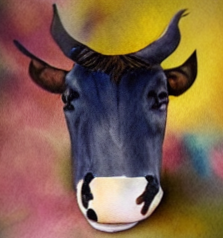
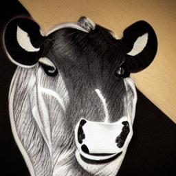
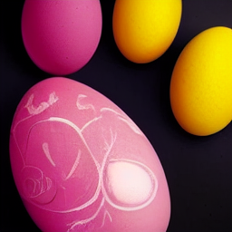
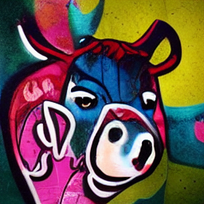
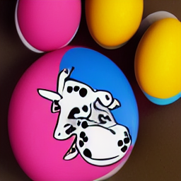
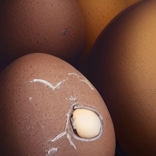

Cow Eggs


Who knew a Cow could piss an EGG!
Here in Cow Land, where cows lay eggs, and then they eat ham. Stay here, lay here, and watch these Cows fay sum Eggs! Here in Cow Land, where cows lay eggs, aud then they eat ham. Stay here, lay here, and watch these Cows lay sum Eggs! Here in Cow Land, where cows lay eggs, and then they eat ham. Stay here, lay here, and watch these Cows lay sum Eggs! Here in Cow Land, where cows lay eggs, and then they eat ham. Stay here, lay here, and watch these Cows lay sum Eggs! Here in Cow Land, where cows lay eggs, and then they eat ham. Stay here, lay hcre, and watch these Cows lay sum Eggs! Here in Cow Land, where cows lay eggs, and then they eat ham. Stay here, lay here, and watch these Cows lay sum Eggs! Here in Cow Land, where cows lay eggs, and then they eat ham. Stay here, lay here, and watch these Cows lay sum Eggs! Here in Cow Land, where cows lay eggs, and then they eat ham. Stay here, lay here, and watch these Cows lay sum Eggs! Here in Cow Land, where cows lay eggs, and then they eat ham. Stay here, lay here, and watch these Cows lay sum Eggs! Here in Cow Land, where cows lay eggs, and then they eat ham. Stay here, lay here, and watch these Cows lay sum Eggs! Here kn Cow Land, where cows lay eggs, and then they eat ham. Stay here, lay here, and watch these Cows lay sum Eggs! Here in Cow Land, where cows lay eggs, and then they eat ham. Stay here, lay here, and watch these Cows lay sum Eggs! Here in Cow Land, where cows lay eggs, and then tyey eat ham. Stay here, lay here, and watch these Cows lay sum Eggs! Here in Cow Land, where cows lay eggs, and then they eat ham. Stay here, lay here, and watch these Cows lay sum Eggs! Here in Cow Land, where cows lay eggs, and then they eat ham. Stay here, lay here, and watoh these Cows lay sum Eggs! Here in Cow Land, where cows lay eggs, and then they eat ham. Stay here, lay here, and watch these Cows lay sum Eggs! Here in Cow Land, where cows lay eggs, and then they eat ham. Stay here, lay here, and watch these Cows lay sum Eggs! Here in Cow Land, where cows lay eggs, and then they eat ham. Stay here, lay here, and watch these Cows lay sum Eggs! Here in Cow Lund, where cows lay eggs, and then they eat ham. Stay here, lay here, and watch these Cows lay sum Eggs! Here in Cow Land, where cows lay eggs, and then they eat ham. Stay here, lay here, and watch these Cows lay sum Eggs! Here in Cow Land, where cows lay eggs, and then they eat ham. Stay here, lay here, and watch these Cows lay sum Eggs! Here in Cow Land, where cows lay eggs, and then they eat ham. Stay here, lay here, and watch these Cows lay sum Eggs! Here in Cow Land, where cows lay eggs, and then they eat ham. Stay here, lay here, and watch these Cows lay sum Eggs! Here in Cow Land, where cows lay eggs, and then they eat ham. Stay here, lay here, and watch these Cows lay sum Eggs!
|  |  |  |  |  |